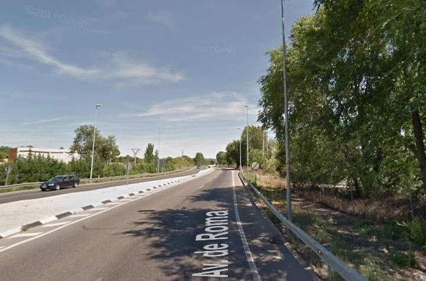
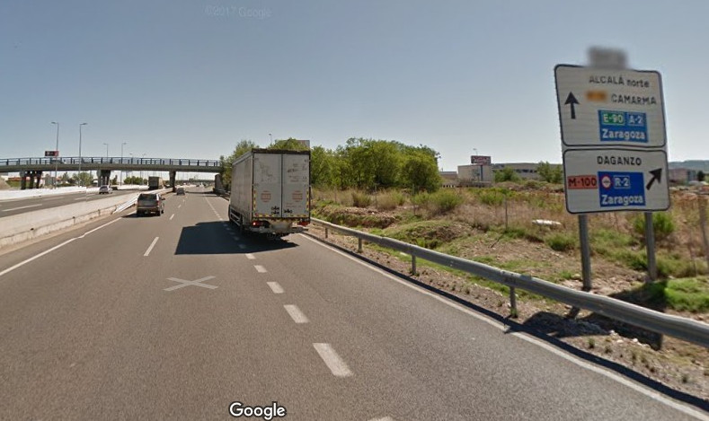
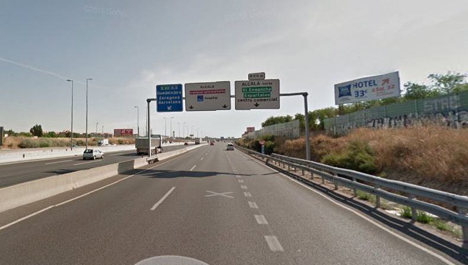
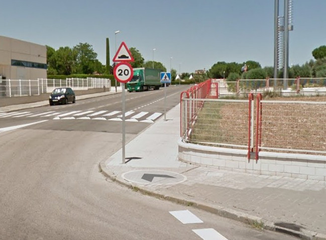
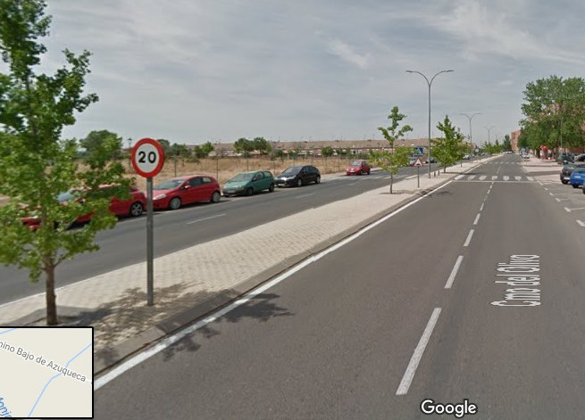
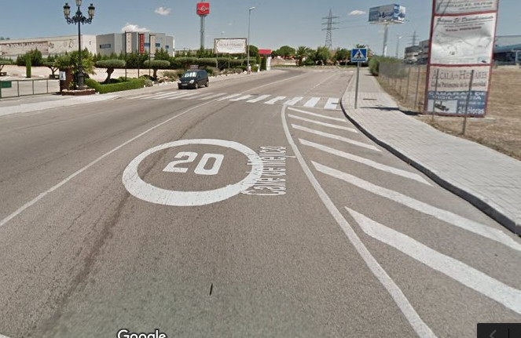

En este apartado si bien se hace referencia a una velocidad excesiva en circunstancias climatológicas adversas (excepcionales en un examen) o al franquear un paso de peatones a excesiva velocidad sin visibilidad lateral, como cuando hay un camión, autobús o furgón parado o estacionado en sus proximidades. Que en este caso tenemos que casi detenernos. De no hacerlo nos descalifican de la prueba.Cuando Las circunstancias atmosféricas sean: fuerte viento, lluvia intensa, niebla densa, fuerte nevada, hielo, nubes de polvo o humo.
No adaptarse al ritmo del tráfico y/o de la vía, cuando las circunstancias lo permitan, habiendo sido invitado a ello.
Circular salpicando o proyectando cualquier materia, causando riesgo o molestias graves o peligrosas a los demás usuarios (peatones, vehículos de dos ruedas etc.…)
Franquear a velocidad excesiva un paso para peatones sin visibilidad lateral.
Reducir considerablemente la velocidad, sin justificación, antes de penetrar en un carril de deceleración, obstaculizando.
Detenerse innecesariamente, obstaculizando.
La mayor incidencia se da por circular a velocidad lenta, en este caso invitándonos a adaptar la velocidad a las circunstancias y a la vía y de no hacerlo sera un suspenso.
A tener en cuenta, exceder en 10 km/h la velocidad reglamentaria será una falta leve, esto es, si hay una señal de 30 km. llegar a 40 km. es una falta leve, pero circular a 35 es correcto. Lo que quiero decir es que es mejor llevar la velocidad cumplida que circular por debajo de ella.
En vías urbanas la velocidad inteligente es 41 km/h., en progresión normal, no así en las intersecciones.
Superar en 10 km/h., la velocidad reglamentaria supone una falta leve
Superar en 20 km/h., sera una falta deficiente
Y hacerlo en 30 km/h., sera Eliminatoria.
Tendrá la misma consideración si el exceso de velocidad es sobre la genérica, o sobre una especifica ya sea señal vertical o marca vial.
Adelantar con lentitud, sin suficiente diferencia de velocidad, obstaculizando
No disminuir la velocidad cuando se produzca alguna situación de peligro, para cualquier usuario de la vía.
Aproximarse o franquear a velocidad excesivamente reducida sin causa justificada, obstaculizando.
Franquear a velocidad inadecuada para las condiciones de la intersección.
En este caso que tenemos dudas si es urbana o interurbana, nos fijamos y tiene aceras por lo tanto es una vía urbana, velocidad máxima 50 km/h.
Aquí no tenemos aceras y si arcén, pues interurbana,de 100 km/h. o 90 km/h., en este caso de 100 por tener 2 carriles en un mismo sentido.
Esto es una vía de servicio, las señales de dirección tienen el fondo blanco. Velocidad máxima 100 km/h., y hay que ir muy atentos a las señales de velocidad que suele esta limitada.
Si tomamos el desvío hacia la izquierda entramos en una Autopista o Autovía la señal que lo indica su fondo es azul, Velocidad máxima 120 km/h.,
En este caso la señal no finaliza hasta llegar a la glorieta, pues tiene debajo un cartel complementario pero no es una señal de peligro.
En este caso cuando superemos el resalto desaparece el límite de velocidad, podremos ir a 50km/h.,
En este caso tenemos una señal de límite de velocidad y luego hay una señal de peligro, pero como no están en el mismo poste, la señal sigue vigente.
Igualmente en este supuesto la señal sigue vigente.